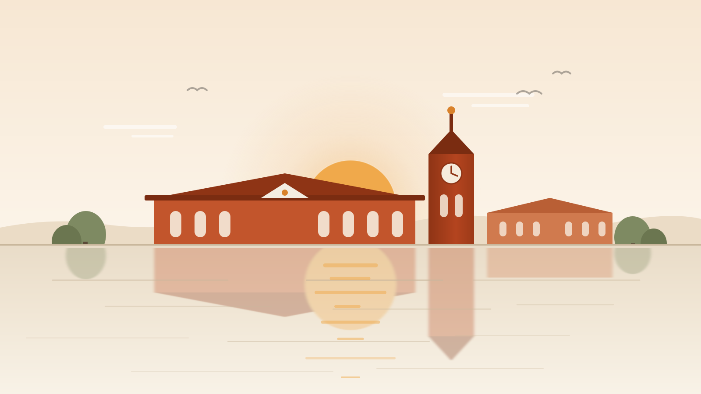

Qiao Yi
Computer Science at BiUH, and a website written one line at a time by hand — no page builder, no template, no shortcut.
Start here
What is on this site
- Quotes Twenty lines worth reading twice — books, speeches, songs and films — each one with who said it and where it comes from, and a new one picked at random every time you load the page.
- Project ideas Five things I might build, each with the exact person it is for and the order I would build it in — not a wish list, a shortlist.
- About What I am learning, which references I actually use, and the one address that reaches me.
The eraser that waits
Sixty years before it had a name, this was a thought experiment. Now it is a blank card, a brass arm, and one rule: whatever you make, it un-makes.